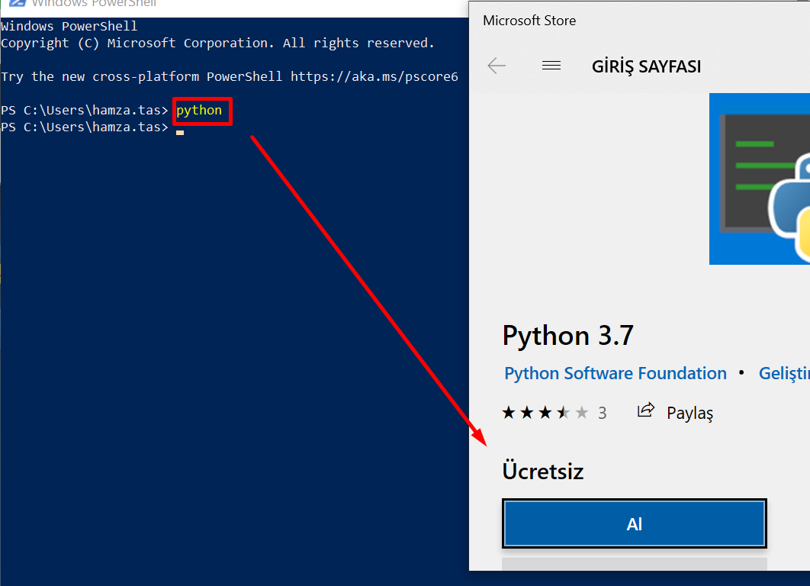
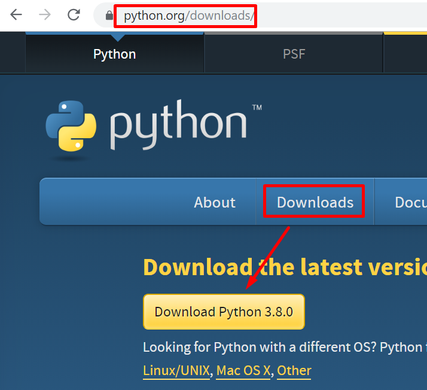
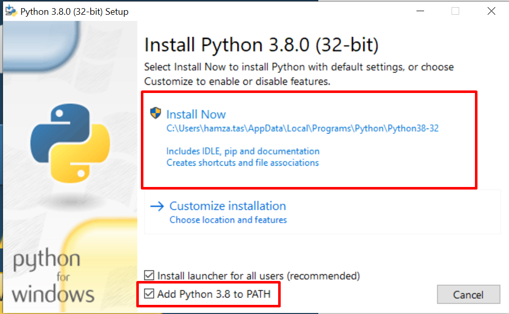
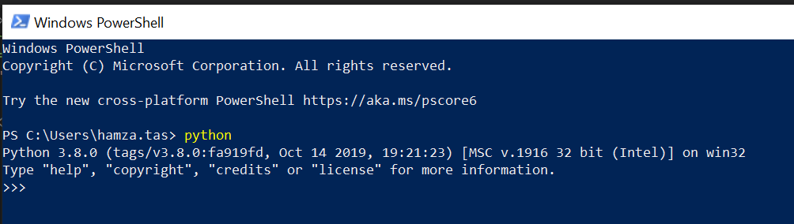
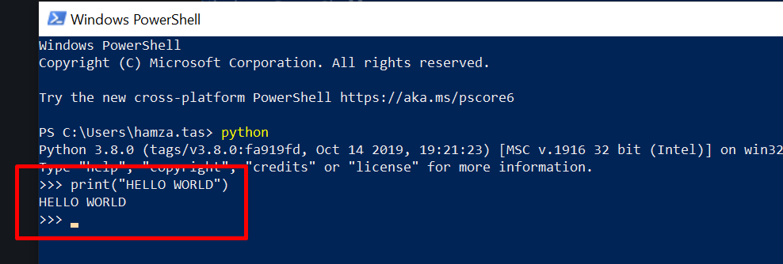

Python Kurulumu
Python nasıl kurulur öğrenelim.
Kurulumu gerçekleştirmeden önce bilgisayarımızda python kurulu mu öğrenmek isteyebiliriz. Bunun için kullanıdğımız bilgisayarın işletim sistemine göre bir komut satırı programından yararlanabiliriz. Biz windowsta bulunan power shell programı ile kontrolumuzu sağlayalım. komut satırına python yazdığımızda python komut satırına geçmeyip hata veriyor veya mağazaya yönlendirme yapıyorsa bilgisiyarımızda python bulunmadığı anlamına gelir.

Python kurulumu gerçekleştirmek için www.python.org adresine giderek bilgisayarımıza pythonı indiriyoruz. En son çıkan 3.8 versiyonunu indirdik.

Daha sonra indirdiğimiz exe dosyasını çalıştırıyoruz ve kurulum önce bize sunulan seçeneklerde Add PYTHON 3.x to PATH seçeneğini işaretledikten sonra yüklemeyi başlatıyoruz.

Kurulum işleminden sonra açmış olduğumuz power shell programını kapatıp tekrar açtıktan sonra python olarak komut çalıştırdığımızda python komut satırına geçmiş olacağız.

Klasik Hello world selamını da verdiktan sonra bu yazıyı bitirebiliriz.
